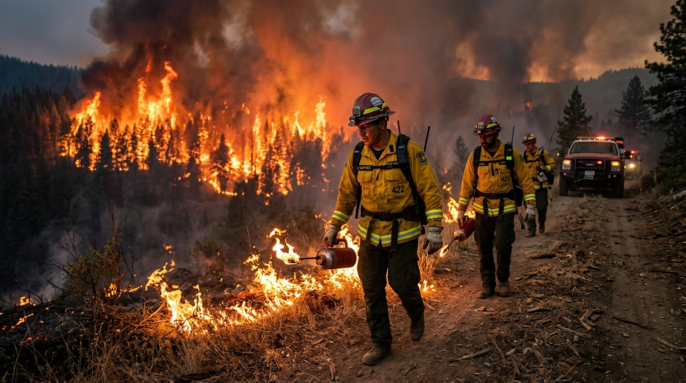

Starving the Monster
Backburning is one of the most powerful and most misunderstood bushfire control tactics. At its core, backburning involves deliberately lighting a controlled fire ahead of the main wildfire, usually from a containment line such as a road, track, dozer line or natural break.
local_fire_department Core Tactic
The purpose is to burn out the available fuel between the containment line and the advancing wildfire, so that when the main fire arrives it has far less vegetation left to consume.

Strategic Execution
Backburning should not be confused with casual burning-off. It is a strategic suppression action, often used during active incidents under pressure. NSW RFS operational guidance shows that backburning is treated as a formal operational activity that requires planning, resource assessment, weather forecasting, mapping and contingency arrangements.
Crews may prepare the edge first by clearing or strengthening the containment line, then ignite carefully so the fire burns back toward the main fire. In ideal conditions, the two fires eventually meet, leaving little or no fuel between them.
Planning Factors
- Weather conditions
- Topography
- Fuel loads
- Crew availability
- Escape contingencies
Judgement and Risk
The main risk is obvious: a backburn is still a fire. If weather changes, wind strengthens, humidity drops, or spotting begins, the controlled burn can become another uncontrolled fire.
That is why agencies require a high level of command oversight. Backburning is a tactical and judgement-heavy tool that demands experience, local knowledge and disciplined coordination.
Reshaping the Fireground
The main advantage of backburning is that it can reshape the fireground. Instead of only reacting to the wildfire’s movement, firefighters can alter the fuel arrangement and build a broader defended space.